건설기계설비기사 (2021-08-14 기출문제)
1과목: 재료역학
1. 그림과 같은 보의 양단에서 경사각의 비(θA/θB)가 3/4이면, 하중 P의 위치 즉 B점으로부터 거리 b는 얼마인가? (단, 보의 전체길이는 L 이다.)
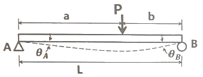
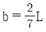
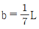
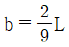
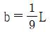
(정답률: 29%)

2. 단면적이 A, 탄성계수가 E, 길이가 L 인 막대에 길이방향의 인장하중을 가하여 그 길이가 δ 만큼 늘어났다면, 이 때 저장된 탄성변형 에너지는?
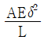
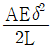
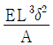
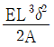
(정답률: 52%)
3. 지름이 1.2m, 두께가 10mm인 구형 압력용기가 있다. 용기 재질의 허용인장응력이 42MPa 일 때 안전하게 사용할 수 있는 최대 내압은 약 몇 MPa 인가?
- 1.1
- 1.4
- 1.7
- 2.1
(정답률: 50%)
4. 그림과 같이 길이 10m인 단순보의 중앙에 200kN·m의 우력(couple)이 작용할 때, B지점의 반력(RB)의 크기는 몇 kN 인가?
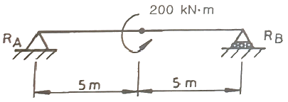
- 10
- 20
- 30
- 40
(정답률: 51%)
5. 외팔보의 자유단에 하중 P가 작용할 때, 이 보의 굽힘에 의한 탄성 변형에너지를 구하면? (단, 보의 굽힘강성 EI는 일정하다.)
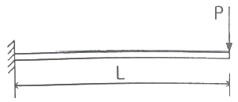
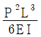
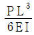
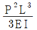
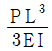
(정답률: 47%)
6. 그림과 같이 외팔보에서 하중 2P가 두 군데 각각 작용할 때 이 보에 작용하는 최대굽힘모멘트의 크기는?
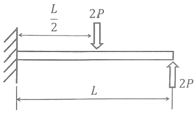
- PL/3
- PL/2
- PL
- 2PL
(정답률: 46%)
7. 그림과 같이 4kN/cm의 균일분포하중을 받는 일단 고정 타단 지지보에서 B점에서의 모멘트 MB는 약 몇 kN·m인가? (단, 균일단면보이며, 굽힘강성(EI)은 일정하다.)
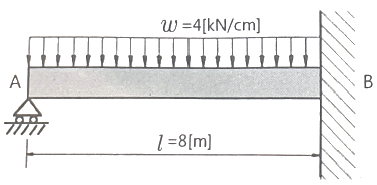
- 800
- 2400
- 3200
- 4800
(정답률: 35%)
8. 단면 치수가 8mm×24mm 인 강대가 인장력 P = 15kN을 받고 있다. 그림과 같이 30° 경사진 면에 작용하는 수직응력은 약 몇 MPa 인가?
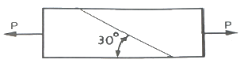
- 19.5
- 29.5
- 45.3
- 72.6
(정답률: 33%)
9. 보기와 같은 A, B, C 장주가 같은 재질, 같은 단면이라면 임계 좌굴화중의 관계가 옳은 것은?
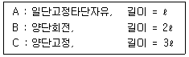
- A ＞ B ＞ C
- A ＞ B = C
- A = B = C
- A = B ＜ C
(정답률: 36%)
10. 원형막대의 비틀림을 이용한 토션바(torsionbar) 스프링에서 길이와 지름을 모두 10%씩 증가시킨다면 토션바의 비틀림강성(torsional stiffness, 비틀림 토크/비틀림 각도)은 약 몇 배로 되겠는가?
- 1.1 배
- 1.21 배
- 1.33 배
- 1.46 배
(정답률: 37%)
11. 그림과 같이 균일한 단면을 가진 봉에서 자중에 의한 처짐(신장량)을 옳게 설명한 것은?
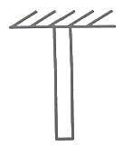
- 비중량에 반비례한다.
- 길이에 정비례한다.
- 세로탄성계수에 정비례한다.
- 단면적과는 무관하다.
(정답률: 26%)
12. 그림과 같은 직사각형 단면에서 x, y축이 도심을 통과할 때 극관성 모멘트는 약 몇 cm4 인가? (단, b=6cm, h=12cm 이다.)
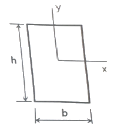
- 1080
- 3240
- 9270
- 12960
(정답률: 38%)
13. 그림과 같이 외팔보의 자유단에 집중하중 P와 굽힘모멘트 Mo가 동시에 작용할 때 그 자유단의 처짐은 얼마인가? (단, 보의 굽힘 강성 EI는 일정하고, 자중은 무시한다.)
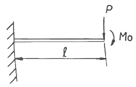
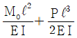
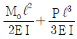
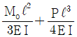
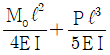
(정답률: 42%)
14. 지름 3mm의 철사로 코일의 평균지름 75mm인 압축코일 스프링을 만들고자 한다. 하중 10N에 대하여 3cm의 처짐량을 생기게 하려면 감은 횟수(n)는 대략 얼마로 해야 하는가? (단, 철사의 가로탄성계수는 88GPa 이다.)
- n = 9.9
- n = 8.5
- n = 5.2
- n = 6.3
(정답률: 33%)
15. 그림과 같은 사각형 단면에서 직교하는 2층 응력 σx= 200MPa, σy = -200MPa 이 작용할 때, 경사면(a-b)에서 발생하는 전단변형률의 크기는 약 얼마인가? (단, 재료의 전단탄성계수는 80GPa이고, 경사각(θ)는 45°이다.)
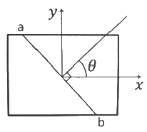
- 0.003125
- 0.0025
- 0.001875
- 0.00125
(정답률: 32%)
16. 강 합금에 대한 응력-변형률 선도가 그림과 같다. 세로탄성계수(E)는 약 얼마인가?
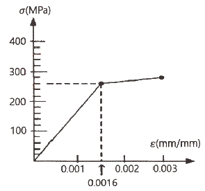
- 162.5 MPa
- 615.4 MPa
- 162.5 GPa
- 615.4 GPa
(정답률: 41%)
17. 바깥지름 4cm, 안지름 2cm의 속이 빈 원형축에 10MPa의 최대전단응력이 생기도록 하려면 비틀림 모멘트의 크기는 약 몇 N·m로 해야 하는가?
- 54
- 212
- 135
- 118
(정답률: 36%)
18. 그림과 같이 반지름 r인 반원형 단면을 갖는 단순보가 일정한 굽힘모멘트를 받고 있을 때, 최대인장응력(σt)과 최대압축응력(σc)의 비(σt/σc)는? (단, e1과 e2는 단면 도심까지의 거리이며, 최대인장응력은 단면의 하단에서, 최대압축응력은 단면의 상단에서 발생한다.)
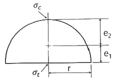
- 0.737
- 0.651
- 0.534
- 0.425
(정답률: 23%)
19. 표점길이가 100mm, 지름이 12mm인 강재 시편에 10kN의 인장하중을 작용하였더니 변형률이 0.000253 이었다. 세로탄성계수는 약 몇 GPa 인가? (단, 시편은 선형 탄성거동을 한다고 가정한다.)
- 206
- 258
- 303
- 349
(정답률: 42%)
20. 그림에서 784.8N과 평형을 유지하기 위한 힘 F1과 F2는?
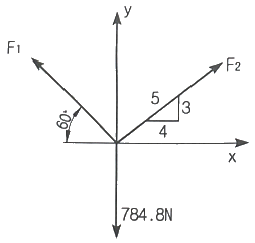
- F1 = 395.2N, F2 = 632.4N
- F1 = 790.4N, F2 = 632.4N
- F1 = 790.4N, F2 = 395.2N
- F1 = 632.4N, F2 = 395.2N
(정답률: 43%)
2과목: 기계열역학
21. 비열비 1.3, 압력비 3인 이상적인 브레이턴 사이클(Brayton Cycle)의 이론 열효율이 X(%)였다. 여기서 열효율 12%를 추가 향상시키기 위해서는 압력비를 약 얼마로 해야 하는가? (단, 향상된 후 열효율은 (X+12)%이며, 압력비를 제외한 다른 조건은 동일하다.)
- 4.6
- 6.2
- 8.4
- 10.8
(정답률: 28%)
22. 질량이 m이고, 한변의 길이가 a인 정육면체 상자 안에 있는 기체의 밀도가 ρ이라면 질량이 2m이고 한 변의 길이가 2a인 정육면체 상자 안에 있는 기체의 밀도는?
- ρ
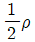
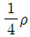
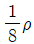
(정답률: 39%)
23. 500℃와 100℃ 사이에서 작동하는 이상적이니 Carnot 열기관이 있다. 열기관에서 생산되는 일이 200kW 이라면 공급되는 열량은 약 몇 kW 인가?
- 255
- 284
- 312
- 387
(정답률: 36%)
24. 상온(25℃)의 실내에 있는 수은 기압계에서 수은주의 높이가 730mm라면, 이 때 기압은 약 몇 kPa 인가? (단, 25℃기준, 수은 밀도는 13534kg/m3 이다.)
- 91.4
- 96.9
- 99.8
- 104.2
(정답률: 33%)
25. 어느 이상기체 2kg이 압력 200kPa, 온도 30℃의 상태에서 체적 0.8m3를 차지한다. 이 기체의 기체상수[(kJ/(kg·K))는 약 얼마인가?
- 0.264
- 0.528
- 2.34
- 3.53
(정답률: 35%)
26. 흑체의 온도가 20℃에서 80℃로 되었다면 방사하는 복사 에너지는 약 몇 배가 되는가?
- 1.2
- 2.1
- 4.7
- 5.5
(정답률: 38%)
27. 그림과 같이 다수의 추를 올려놓은 피스톤이 끼워져 있는 실린더에 들어있는 가스를 계기로 생각한다. 초기 압력이 300kPa이고, 초기 체적은 0.⑤m3 이다. 압력을 일정하게 유지하면서 열을 가하여 가스의 체적을 0.2m3 으로 증가시킬 때 계가 한 일(kJ)은?
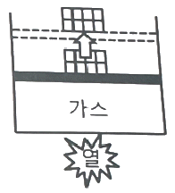
- 30
- 35
- 40
- 45
(정답률: 39%)
28. 열전도계수 1.4W/(m·K), 두께 6mm 유리창의 내부 표면 온도는 27℃, 외부 표면 온도는 30℃이다. 외기 온도는 36℃이고 바깥에서 창문에 전달되는 총 복사열전달이 대류열전달의 50배라면, 외기에 의한 대류열전달계수[W/(m2·K)]는 약 얼마인가?
- 22.9
- 11.7
- 2.29
- 1.17
(정답률: 22%)
29. 고열원의 온도가 157℃이고, 저열원의 온도가 27℃인 카르노 냉동기의 성적계수는 약 얼마인가?
- 1.5
- 1.8
- 2.3
- 3.3
(정답률: 38%)
30. 외부에서 받은 열량이 모두 내부에너지 변화만을 가져오는 완전가스의 상태변화는?
- 정적변화
- 정압변화
- 등온변화
- 단열변화
(정답률: 36%)
31. 밀폐시스템이 압력(P1) 200kPa, 체적(V1) 0.1m3 인 상태에서 압력(P2) 100kPa, 체적(V2) 0.3m3 인 상태까지 가역 팽창되었다. 이 과정이 선형적으로 변화한다면, 이 과정 동안 시스템이 한 일(kJ)은?
- 10
- 20
- 30
- 45
(정답률: 33%)
32. 절대압력 100kPa, 온도 100℃인 상태에 있는 수소의 비체적(m3/kg)은? (단, 수소의 분자량은 2이고, 일반기체상수는 8.3145 kJ/(kmol·K)이다.)
- 31.0
- 15.5
- 0.428
- 0.0321
(정답률: 37%)
33. 1kg의 헬륨이 100kPa 하에서 정압 가열되어 온도가 27℃에서 77℃로 변하였을 때 엔트로피의 변화량은 약 몇 kJ/K인가? (단, 헬륨의 엔탈피(h, kJ/kg)는 아래와 같은 관계식을 가진다.)
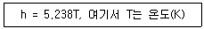
- 0.694
- 0.756
- 0.807
- 0.968
(정답률: 26%)
34. 카르노 열펌프와 카르노 냉동기가 있는데, 카르노 열펌프의 고열원 온도는 카르노 냉동기의 고열원 온도와 같고, 카르노 열펌프의 저열원 온도는 카르노 냉동기의 저열원 온도와 같다. 이 때 카르노 열펌프의 성적계수(COPHP)와 카르노 냉동기의 성적계수(COPR)의 관계로 옳은 것은?
- COPHP= COPR + 1
- COPHP= COPR - 1
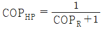
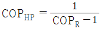
(정답률: 29%)
35. 8℃의 이상기체를 가역단열 압축하여 그 체적을 1/5로 하였을 때 기체의 최종온도(℃)는? (단, 이 기체의 비열비는 1.4 이다.)
- -125
- 294
- 222
- 262
(정답률: 29%)
36. 어느 발명가가 바닷물로부터 매시간 1800kJ의 열량을 공급받아 0.5kW 출력의 열기관을 만들었다고 주장한다면, 이 사실은 열역학 제 몇 법칙에 위배되는가?
- 제 0법칙
- 제 1법칙
- 제 2법칙
- 제 3법칙
(정답률: 38%)
37. 다음 중 그림과 같은 냉동사이클로 운전할 때 열역학 제1법치과 제2법칙을 모두 만족하는 경우는?
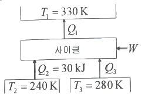
- Q1 = 100kJ, Q3 = 30kJ, W = 30kJ
- Q1 = 80kJ, Q3 = 40kJ, W = 10kJ
- Q1 = 90kJ, Q3 = 50kJ, W = 10kJ
- Q1 = 100kJ, Q3 = 30kJ, W = 40kJ
(정답률: 15%)
38. 열교환기의 1차 측에서 압력 100kPa, 질량유량 0.1kg/s인 공기가 50℃ 로 들어가서 30℃로 나온다. 2차 측에서는 물이 10℃로 들어가서 20℃로 나온다. 이 때 물의 질량유량(kg/s)은 약 얼마인가? (단, 공기의 정압비열은 1 kJ/(kg·K)이고, 물의 정압비열은 4 kJ/(kg·K)로 하며, 열 교환과정에서 에너지 손실은 무시한다.)
- 0.0⑤
- 0.01
- 0.03
- 0.⑤
(정답률: 24%)
39. 보일러 입구의 압력이 9800 kN/m2이고, 응축기의 압력이 4900N/m2 일 때 펌프가 수행한 일(kJ/kg)은? (단, 물의 비체적은 0.001m3/kg 이다.)
- 9.79
- 15.17
- 87.25
- 180.52
(정답률: 33%)
40. 다음 그림은 이상적인 오토사이클의 압력(P)-부피(V)선도이다. 여기서 “ㄱ”의 과정은 어떤 과정인가?
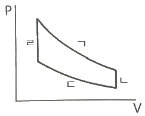
- 단역 압축과정
- 단열 팽창과정
- 등온 압축과정
- 등온 팽창과정
(정답률: 32%)
3과목: 기계유체역학
41. 관내 유동에서 속도를 측정하기 위하여 그림과 같이 관을 삽입하였다. 이 관을 흐르는 유체의 속도(V)를 구하는 식으로 옳은 것은? (단, g는 중력가속도이고, 속도는 단면에서 일정하다고 가정한다.)
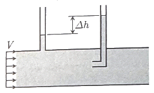
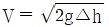
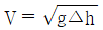
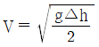
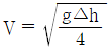
(정답률: 41%)
42. 입구지름 0.3m, 출구지름 0.5m인 터빈으로 물이 공급되고 있다. 터빈의 발생 동력은 180kW, 유량은 1m3/s 이라면 입구와 출구 사이의 압력강하(kPa)는? (단, 열전달, 내부에너지, 위치에너지 변화 및 마찰손실은 무시하며, 정상 비압축성 유동이다.)
- 11.9
- 23.8
- 46.5
- 92.9
(정답률: 20%)
43. 그림과 같이 날개가 유량 0.1m3/s, 속도 20m/s의 물 분류를 받을 경우, 이 날개를 고정하는 데 필요한 힘 F의 크기(절대값)는 약 몇 N 인가? (단, 날개의 마찰은 무시한다.)
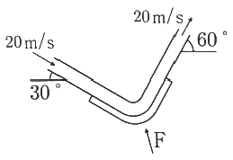
- 4236
- 2828
- 1983
- 1035
(정답률: 24%)
44. 속에 물이 가득 찬 물방울의 표면장력은 0.075 N/m이고, 내부에 공기가 들어있어 내부와 외부의 두 개의 면을 가진 얇은 비눗방울의 표면장력은 0.025 N/m이다. 물방울 내외의 압력차가 비눗방울의 압력차와 같을 때, dW : dS로 옳은 것은? (단, 물방울의 지름은 dW, 비눗방울의 지름은 dS 이다.)
- 1:3
- 2:3
- 3:2
- 3:1
(정답률: 30%)
45. 공기가 평판 위를 3m/s의 속도로 흐르고 있다. 선단에서 50cm 떨어진 곳에서의 경계층 두께(mm)는? (단, 공기의 동점성계수는 16×10-6 m2/s 이고, 평판에서 층류유동이 난류유동으로 변하는 경계점은 레이놀즈 수가 5×105인 경우로 한다.)
- 0.41
- 0.82
- 4.1
- 8.2
(정답률: 15%)
46. 지름 8cm의 구가 공기 중을 20m/s의 속도로 운동할 때 항력(N)은? (단, 공기 밀도는 1.2 kg/m3, 항력계수는 0.6 이다.)
- 0.362
- 0.724
- 3.62
- 7.24
(정답률: 31%)
47. 그림과 같이 안지름이 3m인 수도관에 정지된 물이 절반만큼 채워져 있다. 길이 1m의 수도관에 대하여 곡면 B-C 부분에 가해지는 합력의 크기는 약 몇 kN 인가? (문제 오류로 가답안 발표시 4번이 답안으로 발표되었으나, 확정답안 발표시 전항 정답 처리 되었습니다. 여기서는 가답안인 4번을 누르면 정답 처리 됩니다.)
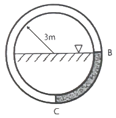
- 59.6
- 65.8
- 74.3
- 82.2
(정답률: 26%)
48. 수면에 떠 있는 배의 저항문제에 있어서 모형과 원형 사이에 역학적 상사(相似)를 이루려면 다음 중 어느 것이 가장 중요한 요소가 되는가?
- Reynolds number, Mach number
- Reynolds number, Froude number
- Weber number, Euler number
- Mach number, Weber number
(정답률: 44%)
49. 세 액체가 그림과 같은 U자관에 들어있고, h1= 20cm, h2 = 40cm, h3 = 50cm 이고, 비중 S1 = 0.8, S3= 2일 때, 비중 S2는 얼마인가?
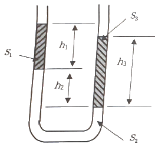
- 1.2
- 1.8
- 2.1
- 2.8
(정답률: 32%)
50. 평판으로부터의 거리를 y라고 할 때 평판에 평행한 방향의 속도 분포 u(y)가 아래와 같은 식으로 주어지는 유동장이 있다. 유동장에서는 속도 u(y)만 있고, 유체는 점성계수가 μ인 뉴턴 유체일 때 y = L/8 에서의 전단응력은? (단, U와 L은 각각 유동장의 특성속도와 특성길이로서 상수이다.)
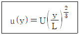
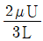
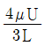
(정답률: 31%)
51. 다음 중 표면장력(surface tension)의 차원은? (단, M : 질량, L : 길이, T : 시간이다.)
- MT-2
- ML-2
- M2L
- MLT
(정답률: 26%)
52. 가로 2cm, 세로 3cm의 크기를 갖는 사각형 단면의 매끈한 수평관 속을 평균유속 1.2 m/s로 20℃의 물이 흐르고 있다. 관의 길이 1m 당 손실 수두(m)는? (단, 수력직경에 근거한 관마찰계수는 0.024 이다.)
- 0.018
- 0.⑤4
- 0.073
- 0.0026
(정답률: 12%)
53. 안지름 240mm인 관속을 흐르고 있는 공기의 평균 유속이 10m/s이면, 공기의 질량유량(kg/s)은? (단, 관속의 압력은 2.45×105 Pa, 온도는 15℃, 공기의 기체상수 R = 287 J/(kg·K) 이다.)
- 1.34
- 2.96
- 3.75
- 5.12
(정답률: 28%)
54. 0.002m3/s 의 유량으로 지름 4cm, 길이 10m인 수평 원관 속을 기름(비중 S= 0.85, 점성계수 μ = 0.⑤6 N·s/m2)이 흐르고 있다. 이 기름을 수송하는데 필요한 펌프의 압력(kPa)은?
- 15.2
- 17.8
- 19.1
- 22.6
(정답률: 19%)
55. 2m3의 탱크에 지름이 0.⑤m의 파이프를 통하여 점성계수가 0.001 Pa·s인 물을 채우려고 한다. 파이프 내의 유동이 계속 층류를 유지시키면서 물을 완전히 채우려면 최소 몇 시간이 걸리는가? (단, 임계 레이놀즈수는 2000 이다.)
- 2.4
- 6.5
- 7.1
- 11.2
(정답률: 27%)
56. 다음 △P, L, Q, ρ 변수들을 이용하여 만든 무차원수로 옳은 것은? (단, △P : 압력차, L : 길이, Q : 체적유량, ρ : 밀도이다.)
(정답률: 33%)
57. 그림과 같이 물이 들어있는 아주 큰 탱킁 사이펀이 장치되어 있다. 사이펀이 정상적으로 작동하는 범위에서, 출구에서의 속도 V와 관련하여 옳은 것을 모두 고른 것은? (단, 관의 지름은 일정하고 모든 손실은 무시한다. 또한 각각의 h가 변화할 때 다른 h의 크기는 변하지 않는다고 가정한다.)
- ㉠, ㉡
- ㉠, ㉢
- ㉡, ㉢
- ㉠, ㉡, ㉢
(정답률: 25%)
58. 해수 위에 떠 있는 빙산이 있다. 물 위에 노출된 빙산의 부피가 전체 빙산의 부피에서 차지하는 비율(%)은? (단, 얼음의 밀도는 920 kg/m3, 해수의 밀도는 1030 kg/m3 이다.)
- 9.53
- 10.01
- 10.68
- 11.24
(정답률: 23%)
59. 다음 중 2차원 비압축성 유동이 가능한 유동은? (단, u는 x방향 속도 성분이고, v는 y방향 속도 성분이다.)
- u = x2 - y2, v = -2xy
- u = 2x2 - y2, v = 4xy
- u = x2 + y2, v = 3x2 - 2y2
- u = 2x + 3xy, v = -4xy + 3y
(정답률: 33%)
60. 그림처럼 수축 수로를 통과하는 1차원 정상, 비압축성 유동에서 수평 중심선상의 속도가 로 주어질 때, x = 0.5L에 위치한 유체 입자의 x 방향 가속도(m/s2)는? (단, A = 0.2m/s, L = 2m 이다.)
- 0.01
- 0.02
- 0.03
- 0.04
(정답률: 17%)
4과목: 유체기계 및 유압기기
61. 절대 진공에 가까운 저압의 기체를 대기압까지 압축하는 펌프는?
- 왕복 펌프
- 진공 펌프
- 나사 펌프
- 축류 펌프
(정답률: 32%)
62. 다음 중 축류펌프의 일반적인 장점으로 볼 수 없는 것은?
- 토출량이 50% 이하로 급감하여도 안정적으로 운전할 수 있다.
- 유량 대비 형태가 작아 설치면적이 작게 요구된다.
- 양정이 변화하여도 유량의 변화가 적다.
- 가동익으로 할 경우 넓은 범위의 양정에서도 좋은 효율을 기대할 수 있다.
(정답률: 18%)
63. 유체 커플링에 대한 일반적인 설명 중 옳지 않은 것은?
- 시동 시 원동기의 부하를 경감시킬 수 있다.
- 부하측에서 되돌아오는 진동을 흡수하여 원활하게 운전할 수 있다.
- 원동기측에 충격이 전달되는 것을 방지할 수 있다.
- 출력축 회전수를 입력축 회전수보다 초과하여 올릴 수 있다.
(정답률: 29%)
64. 동일한 물에서 운전되는 두 개의 수차가 서로 상사법칙이 성립할 때 관계식으로 옳은 것은? (단, Q : 유량, D : 수차의 지름, n : 회전수 이다.)
(정답률: 28%)
65. 펠톤 수차와 프로펠러 수차의 무구속속도(Run away speed, NR)와 정격회전수(N0)와의 관계가 가장 옳은 것은?
- 펠톤 수차 NR = (2.3~2.6)N0
프로펠러 수차 NR = (1.6~2.0)N0 - 펠톤 수차 NR = (2.3~2.6)N0
프로펠러 수차 NR = (2.0~2.5)N0 - 펠톤 수차 NR = (1.8~1.9)N0
프로펠러 수차 NR = (1.6~2.0)N0 - 펠톤 수차 NR = (1.8~1.9)N0
프로펠러 수차 NR = (2.0~2.5)N0
(정답률: 18%)
66. 다음 수력기계 중에서 반동 수차에 속하는 것은?
- 프란시스 수차, 프로펠러 수차, 카플란 수차
- 프란시스 수차, 펠톤 수차, 프로펠러 수차
- 펠톤 수차, 프로펠러 수차, 카플란 수차
- 카플란 수차, 프란시스 수차, 펠톤 수차
(정답률: 25%)
67. 전동기에 연결하여 펌프를 운전하고자 한다. 전동기에 극수가 6개, 전원 주파수가 60Hz, 미끄럼률(슬립률)이 5%일 때 펌프의 회전수는 약 몇 rpm인가?
- 342
- 570
- 1140
- 2280
(정답률: 25%)
68. 송풍기를 압력에 따라 분류할 때 Blower의 압력범위로 옳은 것은?
- 1 kPa 미만
- 1 kPa ~ 10 kPa
- 10 kPa ~ 100 kPa
- 100 kPa ~ 1000 kPa
(정답률: 30%)
69. 프란시스 수차의 형식중 그림과 같은 구조를 가진 형식은?
- 횡축 단륜 단류 원심형 수차
- 횡축 이류 단류 원심형 수차
- 입축 단륜 다류 원심형 수차
- 횡축 단륜 복류 원심형 수차
(정답률: 20%)
70. 펌프관로에서 수격현상을 방지하기 위한 대책으로 옳지 않은 것은?
- 펌프에 플라이 휠(Fly Wheel)을 설치한다.
- 밸브를 펌프 송출구에서 되도록 멀리 설치한다.
- 관의 지름을 되도록 크게 한다.
- 관로에 조압수조(Surge Tank)를 설치한다.
(정답률: 33%)
71. 다음 유압회로는 어떤 회로에 속하는가?
- 로크(로킹) 회로
- 무부하 회로
- 블리드 오프 회로
- 어큐뮬레이터 회로
(정답률: 28%)
72. 다음 중 어큐뮬레이터 용도로 적절하지 않은 것은?
- 에너지 축적용
- 펌프 맥동 흡수용
- 충격압력의 완충용
- 유압유 냉각 및 가열용
(정답률: 31%)
73. 다음 중 방향 제어 밸브의 종류로 옳은 것은?
- 감압 밸브
- 체크 밸브
- 릴리프 밸브
- 카운터 밸런스 밸브
(정답률: 34%)
74. 유압 펌프의 전 효율에 대한 정의로 옳은 것은?
- 축 출력과 유체 입력의 비
- 실 토그와 이론 토크의 비
- 유체 출력과 축 쭉 입력의 비
- 실제 토출량과 이론 토출량의 비
(정답률: 20%)
75. 유압 장치를 이용한 기계의 특징으로 적절하지 않은 것은?
- 입력에 대한 출력의 응답이 빠르다.
- 정지부터 정격속도까지 무단 변속이 가능하다.
- 동작이 원활하고 자동제어가 가능하다.
- 먼지나 이물질에 의한 고장의 우려가 없다.
(정답률: 34%)
76. 유압 작동유의 구비 조건이 아닌 것은?
- 녹이나 부식 발생을 방지할 수 있을 것
- 동력을 확실히 전달하기 위해서 압축성일 것
- 운전온도 범위에서 적절한 점도를 유지할 것
- 연속 사용해도 화학적, 물리적 성질의 변화가 적을 것
(정답률: 38%)
77. 유압회로에서 파선이 의마하는 용도로 옳은 것은?
- 전기 신호선
- 주관로
- 필터
- 귀환 관로
(정답률: 16%)
78. 에너지 제어·조작방식 일반에 관한 용어로 유압회로에서 정규 조작방법에 우선하여 조작할 수 있는 대체 조작수단으로 정의되는 것은?
- 직접 파일럿 조작
- 솔레노이드 조작
- 간접 파일럿 조작
- 오버라이드 조작
(정답률: 24%)
79. 유압 펌프의 토출압력 7.84MPa, 토출유량 3×104 cm3/min인 유압 펌프의 펌프동력은 약 몇 kW 인가?
- 3.92
- 4.64
- 235.2
- 3920
(정답률: 23%)
80. 다음중 캐비테이션 방지대책으로 가장 적절한 것은?
- 흡입관에 급속 차단장치를 설치한다.
- 흡입 유체의 유온을 높게 하여 흡입한다.
- 과부하 시 패킹부에서 공기가 흡입되도록 한다.
- 흡입관내의 평균유속이 일정 속도 이하기 되도록 한다.
(정답률: 28%)
5과목: 건설기계일반 및 플랜트배관
81. 다음 중 운반기계에 해당하지 않는 것은?
- 덤프트럭
- 롤러
- 컨베이어
- 지게차
(정답률: 40%)
82. 불도저가 30m 떨어진 곳에 흙은 운반할 때 1회 사이클 시간(Cm)은 약 얼마인가? (단, 전진속도는 2.4km/h, 후진속도는 3.6km/h, 변속 시간(기어변환 시간)은 12초이다.)
- 1분 15초
- 1분 20초
- 1분 27초
- 1분 36초
(정답률: 25%)
83. 도저의 각종 트랙 슈(shoe)에 대한 설명으로 틀린 것은?
- 습지용 슈 : 슈의 너비를 작게 하여 접지면적을 줄여 연약지반에서 작업하기 좋다.
- 스노 슈 : 눈이나 얼음판의 현장작업에 적합하다.
- 고무 슈 : 노면보호 및 소음방지를 할 수 있다.
- 평활 슈 : 도로파손을 방지할 수 있다.
(정답률: 30%)
84. 롤러 및 롤러의 진동장치에 대한 설명으로 적절하지 않은 것은?
- 타이어식 롤러의 타이어 진동장치는 조종석에서 쉽게 잠글 수 있어야 한다.
- 타이어식 롤러의 타이어 배열이 복열인 경우에는 앞바퀴가 다지지 아니한 부분은 뒷바퀴가 다지도록 배열되어야 한다.
- 롤러의 돌기부는 강판, 주강 또는 강봉 등을 사용하여야 하고, 돌기부의 선단 접지부는 내마모성 강재를 사용하여야 한다.
- 원심력을 이용해 노면을 다지는 롤러에는 머캐덤, 탠덤 롤러가 있으며 정적 자중을 이용하는 것에는 진동 롤러가 있다.
(정답률: 31%)
85. 건설기계관리업무처리규정에 따른 준설선의 구조 및 규격 표시방법으로 틀린 것은?
- 그래브(grab)식 : 그래브 버킷의 평적용량
- 디퍼(dipper)식 : 버킷의 용량
- 버킷(bucket)식 : 버킷의 용량
- 펌프식 : 준설펌프 구동용 주기관의 정격출력
(정답률: 12%)
86. 아래는 도저의 작업량에 영향을 주는 변수들이다. 이 중 도저의 작업능력에 비례하는 변수로 짝지어진 것은?
- ⓐ, ⓑ, ⓒ, ⓓ, ⓔ
- ⓐ, ⓑ, ⓒ, ⓓ
- ⓐ, ⓑ, ⓒ, ⓔ
- ⓐ, ⓑ, ⓔ
(정답률: 33%)
87. 건설플랜트용 공조설비를 건설할 때 합성섬유의 방사, 사진필름 제조, 정밀기계 가공공정과 같이 일정 온도와 일정 습도를 유지할 필요가 있는 경우 적용하여야 하는 설비는?
- 난방설비
- 배기설비
- 제빙설비
- 항온항습설비
(정답률: 37%)
88. 스크레이퍼에 대한 설명으로 적절하지 않은 것은?
- 규격은 작업가능상태의 중량(t)으로 표현한다.
- 도로의 신설 등과 같은 대규모 정지작업에 적합하다.
- 굴착, 적재, 운반 등의 작업을 할 수 있는 기계이다.
- 스크레이퍼를 운전할 경우에는 전복되지 않도록 중심을 가능한 낮추어야 한다.
(정답률: 26%)
89. 강재의 크기에 따라 담금질 효과가 달라지는 것과 관련 있는 용어는?
- 단류선
- 잔류응력
- 노치효과
- 질량효과
(정답률: 36%)
90. 덤프트럭의 동력 전달 계통과 직접적인 관계가 없는 것은?
- 배전기
- 변속기
- 구동륜
- 클러치
(정답률: 34%)
91. 다음 보기에서 설명하는 신축이음의 형식으로 가장 적절한 것은?
- 루프형
- 슬리브형
- 벨로즈형
- 스위블형
(정답률: 22%)
92. 관의 절단과 나사 절삭 및 조립 시 관을 고정시키는 데 사용되는 배관용 공구는?
- 파이프 커터
- 파이프 리머
- 파이프 렌치
- 파이프 바이스
(정답률: 31%)
93. 배관용 탄소 강관(KS D3507)에서 나타내는 배관용 탄소 강관의 기호는?
- SPP
- STH
- STM
- STA
(정답률: 33%)
94. 일반적으로 배관용 가스절단기의 절단 조건이 아닌 것은?
- 모재의 성분 중 연소를 방해하는 원소가 적어야 한다.
- 모재의 연소온도가 모재의 용융온도보다 높아야 한다.
- 금속 산화물의 용융온도가 모재의 용융온도보다 낮아야 한다.
- 금속산화물의 유동성이 좋으며, 모재로부터 쉽게 이탈될 수 있어야 한다.
(정답률: 22%)
95. 급수 배관의 시공 및 점검에 대한 설명으로 적절하지 않은 것은?
- 급수관에서 상향 급수는 선단 상향 구배하고 하향 급수에서는 선단 하양 구배로 한다.
- 급수 배관에서 수격 작용을 방지하기 위해 공기실, 충격 흡수장치들의 설치 여부를 확인한다.
- 역류를 방지하기 위해 체크 밸브를 설치하는 것이 좋다.
- 급수관에서 분기할 때에는 크로스 이음이나 T이음을 +자 형으로 사용한다.
(정답률: 18%)
96. 배관 시공에서 벽, 바닥, 방수층, 수조 등을 관통하고 콘크리트를 치기 전에 미리 관의 외경보다 조금 크게 넣고 시공하는 것과 관련있는 것은?
- 인서트
- 숏피닝
- 슬리브
- 테이핑
(정답률: 15%)
97. 배관용 탄소강관 또는 아크용접 탄소강관에 콜타르에나멜이나 폴리에틸렌 등으로 피복한 관으로 수도, 하수도 등의 매설 배관에 주로 사용되는 강관은?
- 배관용 합금강 강관
- 수도용 아연도금 강관
- 압력 배관용 탄소강관
- 상수도용 도복장 강관
(정답률: 29%)
98. 관의 구부림 작업에서 곡률반경은 100mm, 구부림 각도를 45°라 할 때 관 중심부의 곡선길이는 약 몇 mm 인가?
- 39.27
- 78.54
- 157.08
- 314.16
(정답률: 26%)
99. 배관 시험에 대한 설명으로 적절하지 않은 것은?
- 수압 시험은 일반적으로 1차 시험으로 많이 사용되며, 접합부가 누수와 수압을 견디는가를 조사하는 것이다.
- 통수 시험은 배관계를 각각 연결하기 전 누수 부분이 없는지 확인하기 위해 수행하며 특히 옥외 매설관은 매설 하고난 후 물을 통과시켜 검사한다.
- 기압 시험은 배관 내에 시험용 가스를 흐르게 할 경우 수압 시험에 통과되었더라도 공기가 새는 일이 있을 수 있으므로 행해준다.
- 연기 시험은 적당한 개구부에서 1개조 이상의 연기발생기로 짙은 색의 연기를 배관 내에 압송한다.
(정답률: 33%)
100. 유량조절이 용이하고 유체가 밸브의 아래로부터 유입하여 밸브 시트의 사이를 통해 흐르는 밸브는?
- 콕
- 체크 밸브
- 글로브 밸브
- 게이트 밸브
(정답률: 31%)
먼저, A점에서의 기울기 tanθA는 다음과 같다.
tanθA = h/L
여기서 h는 A점에서의 높이이다. 마찬가지로 B점에서의 기울기 tanθB는 다음과 같다.
tanθB = (h + P)/L
여기서 h+P는 B점에서의 높이이다. 이제 tanθA와 tanθB의 관계식을 이용하여 b를 구해보자.
tanθA = 3/4 tanθB
h/L = 3/4 (h+P)/L
4h = 3h + 3P
h = 3P/1
따라서, B점으로부터 거리 b는 L-h이므로, b = L - 3P 이다.
정답은 "" 이다.
이유는, B점으로부터 거리 b는 L-3P으로 구해진다는 것을 알 수 있다. 따라서, P가 증가하면 b는 감소하게 된다.